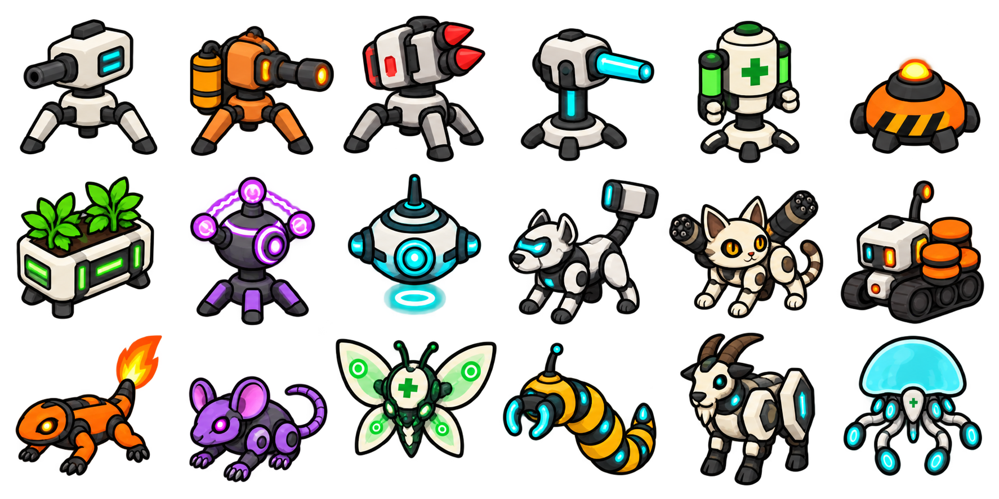
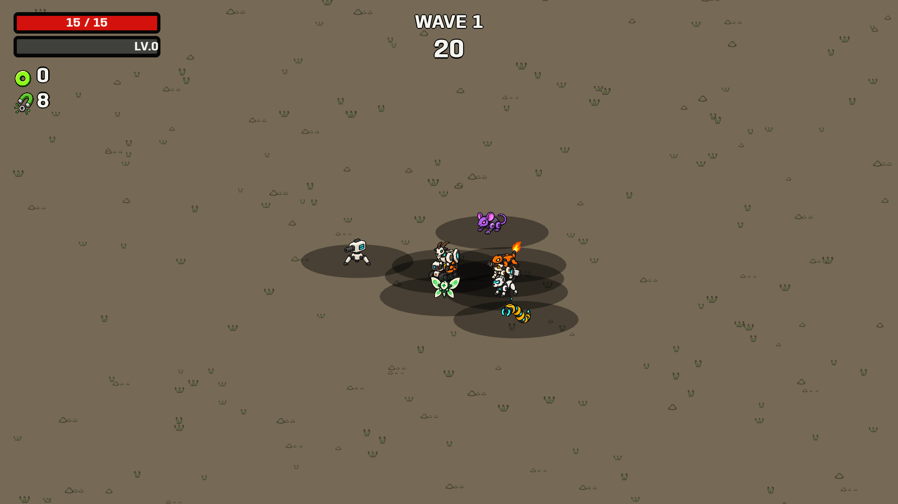

Music stays silent until the first Start confirmation after weapon selection. Later waves and restarts preserve playback.
Energetic beat, warm chords and softer percussion; no metal distortion. This preview plays only when you press Play.

Rust-like patches, scratches and unnecessary surface lines removed.
A slowed sequence of the turret firing cycle and companion movement. The shadows remain grounded. Single-sprite body motion adapts the reference timings; it does not reproduce separate animated ears, wings and tails.

293 EditMode tests passed. Built-player checks confirm music silence before Start, playback after Start, no rewind on repeated Start, changing turret poses and fixed shadow anchors. All nine companion behavior checks passed.
Reference notes and implementation details